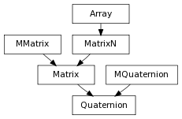

alias of MQuaternion
Converts a quaternion to an euler rotation.
| Return type: | EulerRotation |
|---|
Derived from api method maya.OpenMaya.MQuaternion.asEulerRotation
Wrap the Quaternion api assign method
Performs an in place conjugation of this quaternion. The result is a quaternion whose x, y, and z values have been negated.
| Return type: | Quaternion |
|---|
Derived from api method maya.OpenMaya.MQuaternion.conjugateIt
Exponentiates a quaternion that has a scalar part of zero. The precondition for using this method is that w is zero.
| Return type: | Quaternion |
|---|
Derived from api method maya.OpenMaya.MQuaternion.exp
Wrap the Quaternion api get method
Performs an in place inversion of this quaternion.
| Return type: | Quaternion |
|---|
Derived from api method maya.OpenMaya.MQuaternion.invertIt
Returns the natural log of a quaternion. The precondition for using this method is that the quaternion must be normalized.
| Return type: | Quaternion |
|---|
Derived from api method maya.OpenMaya.MQuaternion.log
Performs an in place negation of the quaternion. The result is a quaternion whose x, y, z, and w values have been negated.
| Return type: | Quaternion |
|---|
Derived from api method maya.OpenMaya.MQuaternion.negateIt
Performs an in place normalization of this quaternion. The result is a quaternion of unit length.
| Return type: | Quaternion |
|---|
Derived from api method maya.OpenMaya.MQuaternion.normalizeIt
The rotation expressed in this Quaternion, in transform space
The scale expressed in this Quaternion, which is always (1.0, 1.0, 1.0)
Performs an in place scaling of the quaternion. The result is a quaternion whose x, y, z, and w values have been scaled by the specified amount.
| Parameters : |
|
|---|---|
| Return type: |
Derived from api method maya.OpenMaya.MQuaternion.scaleIt
Sets this quaternion to be the rotation about the X axis of theta (in angular units). If the length of the axis is too small the quaternion returned will be the identity quaternion.
| Parameters : |
|
|---|---|
| Return type: |
Derived from api method maya.OpenMaya.MQuaternion.setToXAxis
Sets this quaternion to be the rotation about the Y axis of theta (in angular units). If the length of the axis is too small the quaternion returned will be the identity quaternion.
| Parameters : |
|
|---|---|
| Return type: |
Derived from api method maya.OpenMaya.MQuaternion.setToYAxis
Sets this quaternion to be the rotation about the Z axis of theta (in angular units). If the length of the axis is too small the quaternion returned will be the identity quaternion.
| Parameters : |
|
|---|---|
| Return type: |
Derived from api method maya.OpenMaya.MQuaternion.setToZAxis
The translation expressed in this MMQuaternion, which is always (0.0, 0.0, 0.0)